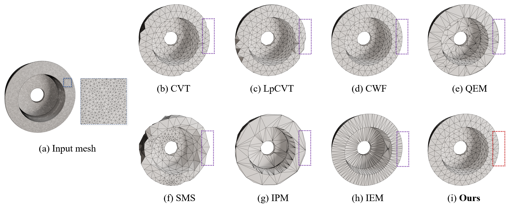

Mesh lightweighting facilitates various applications such as digital twins and real-time transmission by substantially reducing representation complexity while maintaining fidelity as much as possible. However, balancing computational cost and lightweighting quality, in terms of triangulation and feature preservation, continues to be challenging, since many previous approaches prioritize a single criterion rather than excelling on both objectives. This paper presents a unified optimization framework for efficient mesh lightweighting, particularly for CAD models, by jointly enforcing multiple constraints through a coupled formulation that combines particle-interaction energy with a normaldirection anisotropy term. It targets (1) uniformly distributing surface-constrained movable points to maintain high triangle quality, with a simpler and more efficient implementation than the Centroidal Voronoi Tessellation (CVT), and (2) preserving salient features in the spirit of Quadric Error Metrics (QEM) within a continuous formulation. Owing to the smooth functional design, the method exhibits superlinear convergence. Comprehensive experimental evaluations further verify that our method significantly surpasses existing lightweighting approaches with respect to mesh quality, computational cost, and feature consistency.
In this work, we introduce a unified optimization framework built on a particle-system formulation, which integrates the goals of geometric fidelity, computational overhead control, and resulting mesh quality into a single, coherent objective, thereby enabling a coherently aligned trade-off between practical performance demands and high-standard mesh outputs.
Mesh simplification aims to reduce complexity to balance the need for visual fidelity with computational efficiency. In past research, QEM can preserve geometry reasonably well, yet it frequently degrades triangle quality and connectivity regularity. Another famous approach is CVT which yield high quality elements, but they are often expensive and less reliable for strict feature alignment. And recent schemes CWF integrate feature fidelity and triangle quality. However, its overall time efficiency is still constrained.

Comparison with state-of-the-art methods on CAD input. Our approach demonstrates superior performance in feature alignment and triangle quality. The target number of vertices for both inputs is set at 600.

Comparisons on the bunny model using 2000 sample points show that our method can consolidate weak features just like CWF, such as the ears and legs of the bunny model.


CWF can take both mesh quality and feature alignment into account. In comparison, we achieve a pronounced reduction in runtime while preserving both geometric fidelity and triangle quality.


If our work is helpful to you, please cite it:
{}